Innenausbau
Konstanz
Trockenbauwände, Abhangdecken und Fertigstellungsarbeiten in Zimmern, Fluren und in der Lobby eines Neubaus in Konstanz.
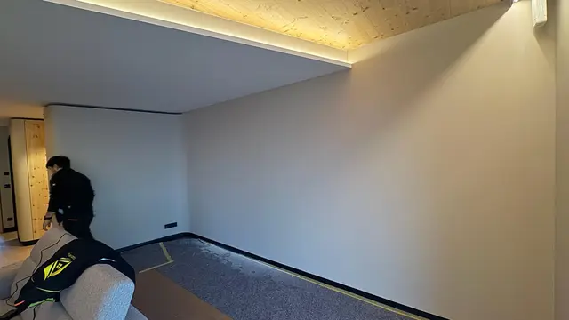
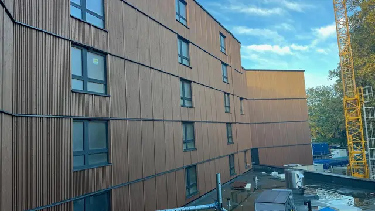
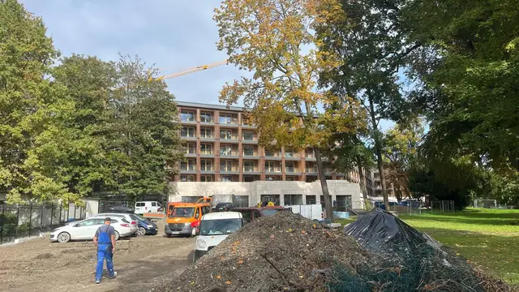
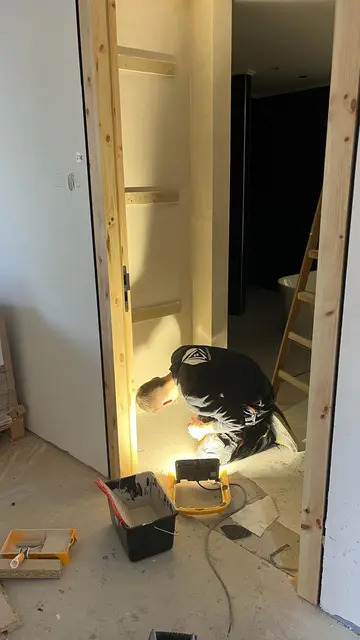
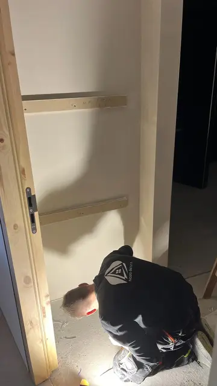
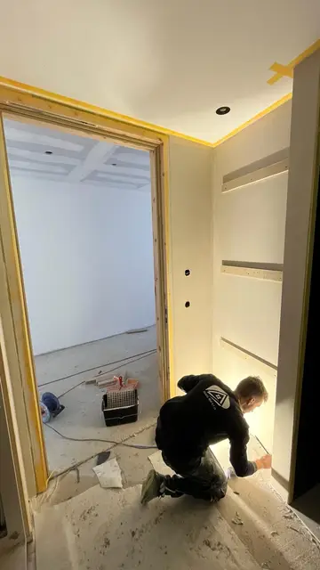
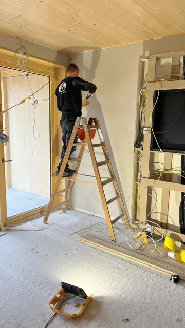
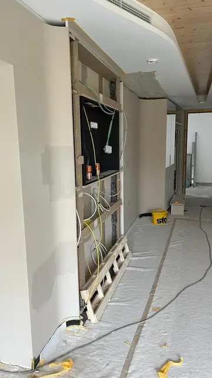
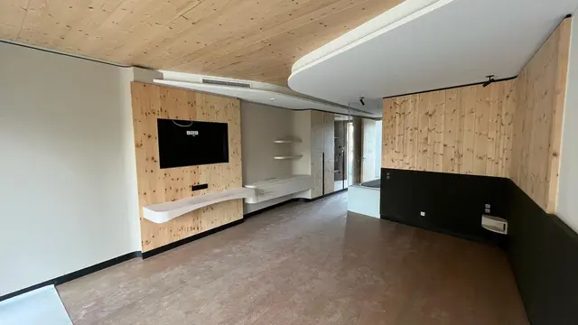
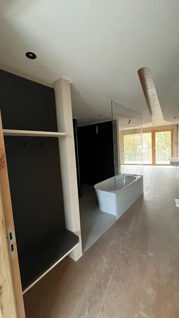
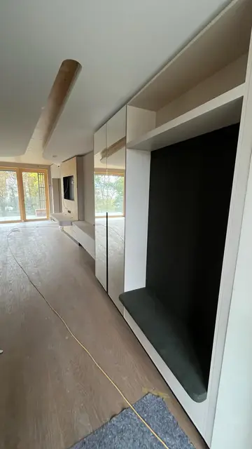
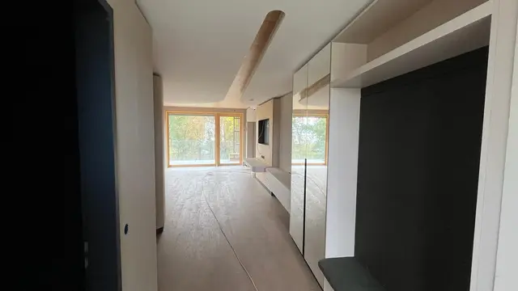
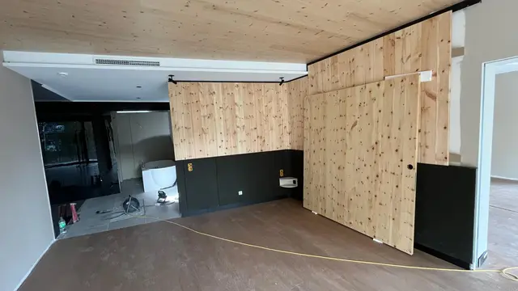
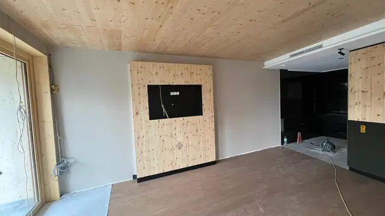
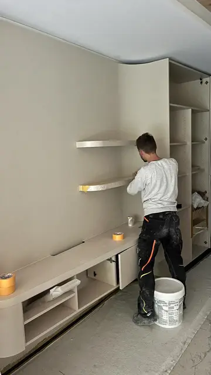
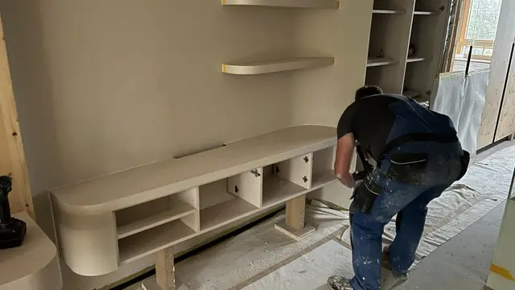
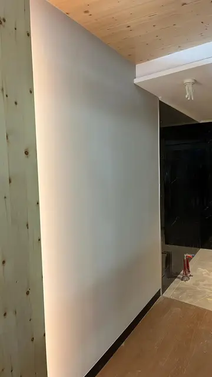
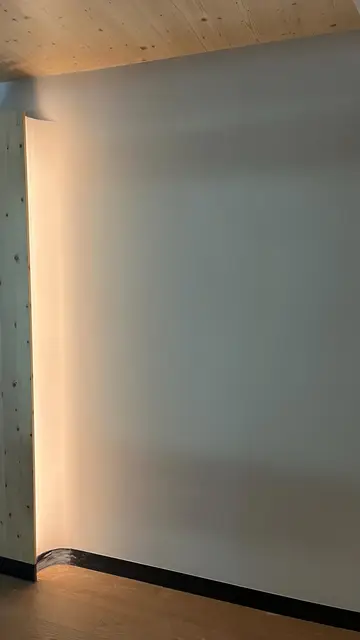
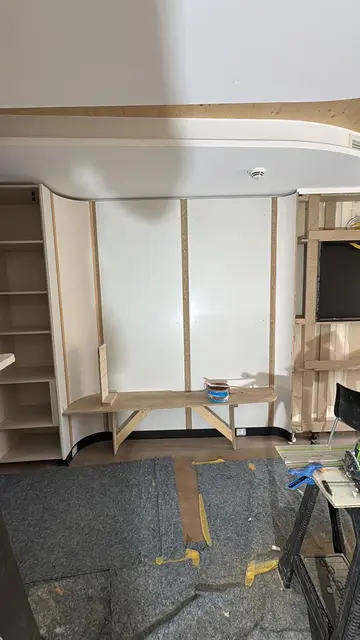
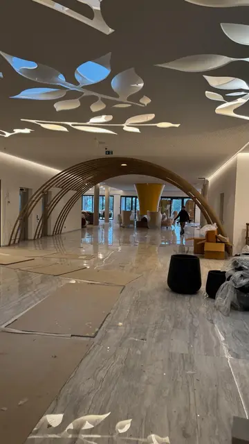
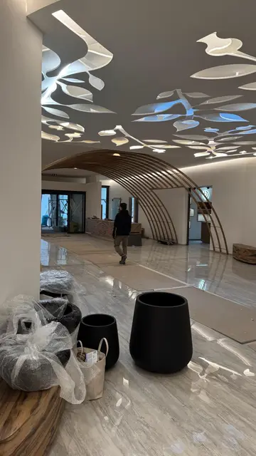
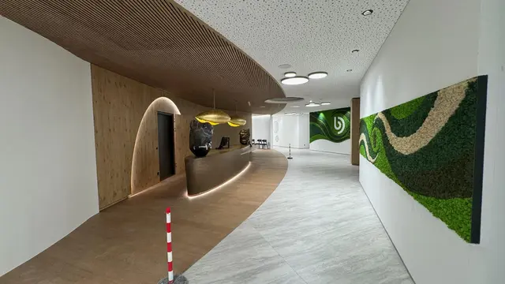
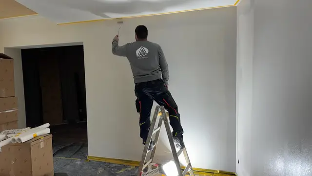
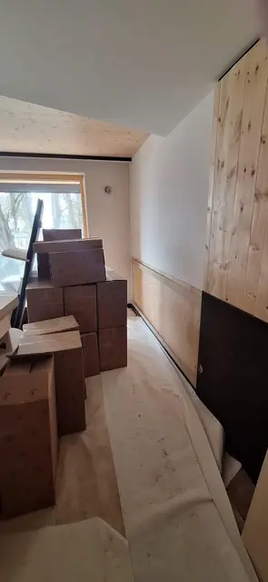
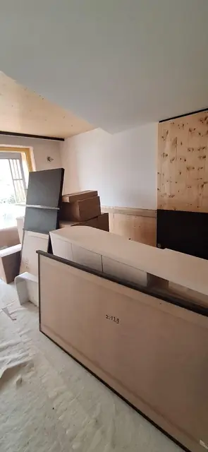
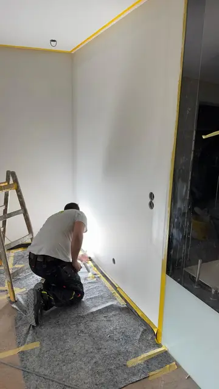
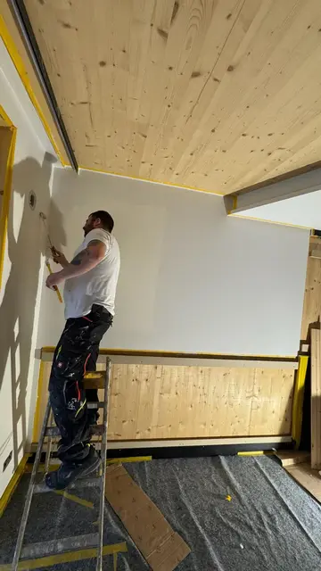
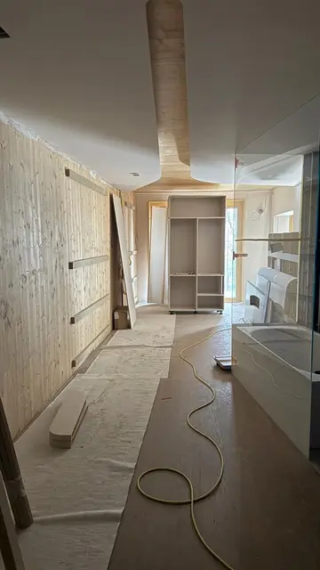
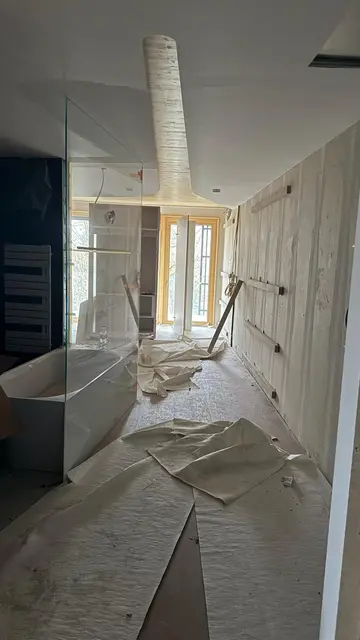
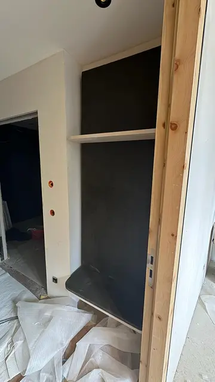
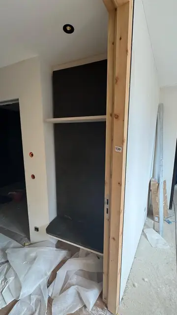
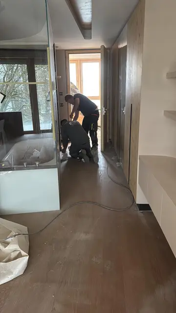
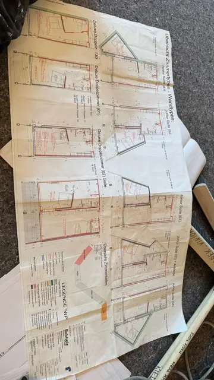
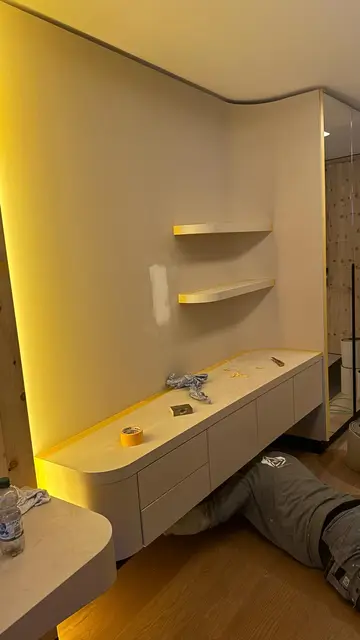
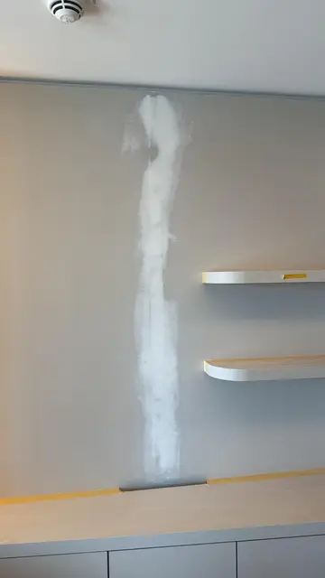
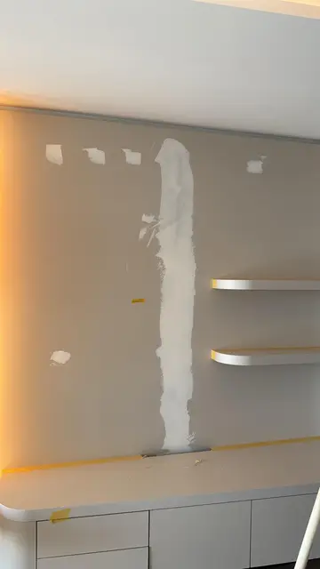
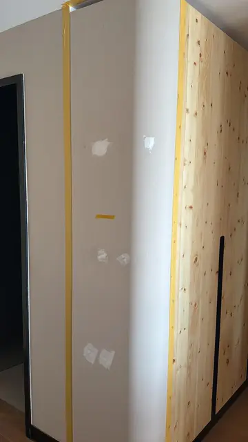
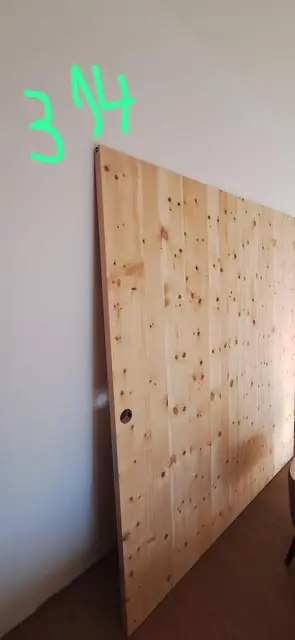
Weitere Referenzen


Sie haben ein ähnliches Projekt?
Schicken Sie uns Leistungsumfang, Baustelle und Termin. Wir melden uns zurück.